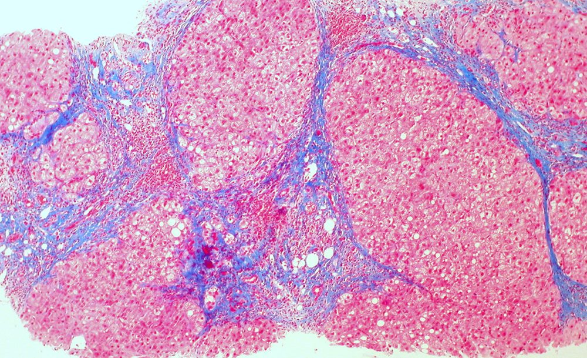
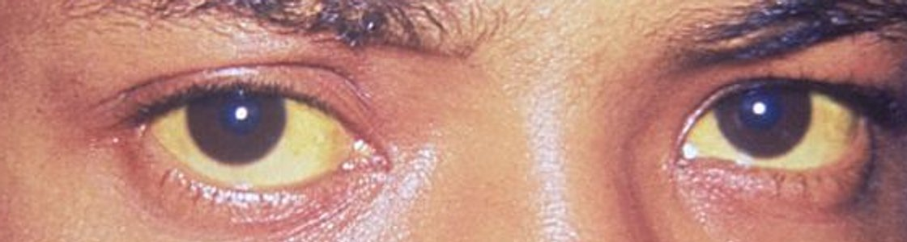

A common mix-up
Many people in Singapore believe you catch hepatitis B from eating bad seafood. In one local survey, more than half of adults thought so.
That isn't how hepatitis B spreads. The real way it spreads, and what it does once it's inside the body, is a very different story. It also explains why so many people carry the virus for decades without ever knowing.
This page walks you through that story, one step at a time.
Meet your liver: the body's busiest factory
Your liver sits under your right ribs. It's the largest organ inside your body, weighing about 1.5 kg, and it never stops working. All the blood coming from your stomach and gut flows through the liver first, so it can clean and process what you've eaten before the blood goes back to the heart.
Think of it as a factory that runs day and night to keep you healthy. It has four main departments:
Icons: Kayne Tan, AI-assisted (Claude)
Keep these departments in mind. Later on, each one will explain a symptom.
The workers and their instruction manual
A factory needs workers. Your liver's workers are its cells: hundreds of billions of tiny living units that do all of the jobs above.
Every worker has a control room at the centre of the cell (scientists call it the nucleus). Inside it is an instruction manual: your DNA. The manual holds about 20,000 individual instructions, called genes. Each one tells the worker how to make something, like a clotting protein.
The worker reads its manual all day and follows the instructions to keep the factory running. Remember this worker and its manual. They're at the heart of what hepatitis B does.
Who's who in this story
- The factory
- your liver
- The workers
- your liver cells
- The control room
- each cell's nucleus
- The instruction manual
- the cell's DNA
What is hepatitis B, and how does it spread?
"Hepatitis" simply means inflammation of the liver. Inflammation is the body's reaction to injury: swelling, heat and repair work. Hepatitis B is liver inflammation caused by the hepatitis B virus.
A virus is a tiny packet of instructions wrapped in a protective coat. It's far smaller than a cell and can't do anything on its own. To make copies of itself, it has to get inside a living cell and use that cell's machinery.
How hepatitis B spreads
The virus lives in blood and some other body fluids, such as semen and vaginal fluid. It passes on when these fluids get into another person's body:
- From mother to baby around the time of birth
- In early childhood, through close contact with an infected family member's blood, for example through cuts or open sores
- Through blood in adulthood, for example by sharing needles, razors or toothbrushes, or through unsterile tattoo, piercing or medical equipment
- Through unprotected sex
In many parts of Asia, the virus has most often been passed on at birth or in early childhood.
Test your instincts. Can hepatitis B spread this way? Tap or click a card to flip it.
For the curious
Hepatitis B virus is a DNA virus. Each particle is about 42 nanometres across; roughly 2,000 of them in a row would span the width of a human hair.
Getting into the factory
Once in the blood, the virus travels to the liver. Why the liver, and not the lungs or the skin?
Because the virus carries a very particular key. It only fits a lock found on the outside of liver cells. When the key meets the right lock, the door opens and the virus gets in.
That's why hepatitis B is a liver disease: the virus can't get into most other cells.
For the curious
The "lock" is a protein called NTCP (sodium taurocholate co-transporting polypeptide). Its normal job is to help liver cells take up bile salts from the blood. Hepatitis B hijacks it as its entry door.
The extra page
This is the most important part of the story.
Once inside the worker, the virus heads straight for the control room, where the instruction manual is kept. There, it drops its own page of instructions in right next to the manual.
The worker's own repair tools then "fix" this page into a sealed loop that stays tucked in beside the manual, like an extra loose chapter. From now on, the worker treats the virus's page as if it were part of its own instructions.
This extra page is almost impossible to remove. Some copies of the page are even sent back into the control room, adding more pages over time. This is why hepatitis B can last a lifetime, and why it can flare up again years later.
For the curious
Scientists call the extra page cccDNA, short for covalently closed circular DNA. It's very stable, which is why the body finds hepatitis B so hard to get rid of once it has settled in.
Why you don't feel ill: the worker keeps working
Here's the surprising part: the virus doesn't break the worker.
The infected worker keeps doing its normal job, cleaning the blood and making clotting proteins. But because it now follows the extra page as well, it also makes new copies of the virus. These slip gently out of the cell without bursting it, travel through the blood and infect other workers.
The virus also barely sets off the worker's built-in alarm, which normally calls for help when a virus gets in, so at first the body hardly notices it's there.
The factory keeps running normally. That's why a person can carry hepatitis B for many years and feel completely well.
Why babies keep the virus for life, but most adults don't
The age at which you meet the virus makes a huge difference:
- About 95 in every 100 babies and young children who are infected stay infected for life.
- Fewer than 5 in every 100 adults who catch it stay infected. Most adults clear it within a few months.
Why? Your body has a security team, the immune system, that learns to tell "me" from "not me". A newborn's security team is still in training. When the virus arrives this early, the young immune system learns to treat it as a normal part of the body and leaves it alone, like a truce. This is thought to be helped along by a virus protein that crosses from the mother before birth.
An adult's security team is fully trained. It usually recognises the virus as an intruder and clears it: the guards destroy the few infected workers before the extra page can spread, and send out chemical signals that silence any pages left behind.
For the curious
This is called immune tolerance. The virus protein that crosses the placenta is HBeAg (hepatitis B e-antigen). It dampens the baby's immune response to the virus.
Security finds the red flag
So if the virus doesn't break the workers, what damages the liver? The answer is your own security team.
Even in people infected as babies, the truce from section 8 doesn't last forever. It usually ends in the teenage or adult years when, for reasons scientists don't fully understand, the security team starts to notice the infected workers.
Every worker regularly displays small samples of what's happening inside it on its outside wall, a bit like a shop window. When a worker is infected, pieces of the virus appear in that window. This acts like a red flag.
Security guards, your immune cells, patrol the liver. When they spot a red flag, they destroy that worker to stop the infection spreading.
The virus is the reason, but your own defences do the damage.
When a worker is destroyed, some of what was inside it spills into the blood. A blood test can pick this up, which is how doctors can tell that liver cells are being damaged.
All this fighting causes swelling and irritation in the liver, which is exactly what hepatitis means.
For the curious
The guards are killer T cells (also called cytotoxic T cells). The shop window is a molecule called MHC class I (major histocompatibility complex class I). One of the spilled contents doctors measure is an enzyme called ALT (alanine aminotransferase).
A battle that never ends
In a short, fresh infection in an adult, the security team usually wins: it clears the virus and the liver heals.
But when the virus stays for years, the guards slowly become worn out. They can no longer clear the virus completely, yet they keep attacking infected workers on and off.
The result is long-lasting (chronic) inflammation: waves of damage and repair that can go on for decades. Some years are quiet. Others bring a sudden burst of attacks, called a flare.
For the curious
Scientists call the worn-out state T-cell exhaustion.
Scar takes their place
Your liver is very good at repairing itself. After small injuries it can grow new workers to replace those it lost.
But after years of repeated damage, repair changes. The constant injury wakes up scar-making cells that normally sit quietly in the liver. Instead of new workers, the gaps are increasingly filled with the scar tissue they lay down: tough, stringy material, much like a scar on your skin. Scar holds the factory together, but it can't do any of the factory's work.
Slowly, bands of scar spread through the liver. Doctors call this fibrosis. Eventually the scar walls off clumps of surviving workers, and the liver becomes hard and lumpy. This is cirrhosis.

blue = scar pink = surviving liver cellsHow the damage shows up
Once too many workers have been lost, the jobs they used to do start going undone, and that's when symptoms appear. Each symptom below traces back to one of the departments from section 2. Tap or click a symptom to open or close its explanation.

Yellow skin and eyesCleaning department
The yellow pigment from old red blood cells isn't cleared, so it builds up in the skin and the whites of the eyes. Urine can turn dark for the same reason. Doctors call this jaundice.
Bruising and bleeding easilyClotting department
The liver makes too few clotting proteins, so blood takes longer to clot. Small bumps leave large bruises, and cuts bleed for longer.
Swollen belly and anklesWater-keeping department + blocked blood flow
There's too little of the protein that holds water inside blood vessels. At the same time, scar squeezes the blood vessels running through the liver and raises the pressure inside them. Together, these push fluid out of the blood so it collects in the belly and legs.
Vomiting blood or black stoolsBlocked blood flow
With the road through the liver blocked by scar, blood takes detours through thin veins in the food pipe and stomach. These veins swell and can burst.
Confusion and drowsinessCleaning department
Ammonia and other wastes aren't removed properly. They travel to the brain and affect thinking.
Tiredness and poor appetiteProcessing department + the whole factory
Less energy is stored for between meals, and the whole factory is struggling to keep up with the body's needs.
When the page damages the manual: liver cancer
Hepatitis B can also lead to liver cancer, in two main ways.
1. More copying, more mistakes. Every time workers are lost, the survivors divide to replace them, and each time they must copy their whole instruction manual. After decades of this, small copying mistakes build up. Some switch off the instructions that normally stop a cell from growing out of control.
2. Pieces of the virus's page get glued into the manual itself. Apart from the sealed loop that sits beside the manual (section 6), small broken-off pieces of the virus's instructions can also get inserted into the worker's own manual, in the middle of its real chapters. This can scramble nearby instructions, including ones that control growth.
Because of this second route, hepatitis B can cause liver cancer even in a liver that hasn't yet become badly scarred.
Liver cancer is now the third deadliest cancer in Singapore.
Why people aged 45 to 60 are more likely to carry it
If you were born in Singapore before September 1987, you probably weren't protected against hepatitis B as a baby:
- Newborn vaccination started after you were born. Singapore began vaccinating every newborn against hepatitis B in September 1987. Before that, most babies had no protection at the time they were most likely to catch the virus and keep it for life.
- You had probably left school before the catch-up. From 2001 to 2004, vaccination was offered to students in secondary schools, junior colleges, polytechnics, ITE and universities, and to full-time national servicemen. Most people now aged 45 to 60 had already left school by then.
That's why many Singaporean adults of this age carry hepatitis B, even though babies born today are protected.
How the vaccine protects
The vaccine works like a "wanted poster". It shows your security team a harmless copy of the virus's outer coat, so the team makes antibodies: tiny tags that grab the real virus before it can get into your liver workers.
That's why babies are now vaccinated at birth, during the window when the virus is most likely to settle in for life.
The whole story in one picture
Drawings: Kayne Tan, AI-assisted (Claude)
Who's who in this story
- The factory
- your liver
- The workers
- your liver cells
- The control room
- each cell's nucleus
- The instruction manual
- the cell's DNA
- The extra page
- the virus's own DNA
- The security guards
- your immune cells
- The red flag
- pieces of virus on the cell surface
Hepatitis B is a slow story. The virus hides, your own defences do the damage, and scar quietly takes over, often for decades before anything feels wrong.
Test yourself
How much of the story stuck? Six quick questions. Tap or click an answer to see how you did. Your answers stay on your screen only.
Credits
Photos
- Hepatitis B virus particles under an electron microscope, by CDC / Dr Erskine Palmer (1981). Source: Public Health Image Library #270. Licence: public domain. Changes: cropped. Used in section 4.
- "Cirrhosis of the liver (trichrome stain)", by Ed Uthman (2011). Source: Flickr. Licence: CC BY 4.0. Adapted from the original: cropped, labels added. Used in section 11.
- Jaundice in the eyes (a hepatitis A case, used only to show what jaundice looks like), by CDC / Dr Thomas F. Sellers, Emory University (1963). Source: Public Health Image Library #2860. Licence: public domain. Changes: cropped. Used in section 12.
Drawings and animations
All created by Kayne Tan with AI assistance (Claude, Anthropic) for this page:
- Top of page: the liver drawn as a factory, with workers and a sneaking virus; and the QR code
- Section 1: seafood plate crossed out
- Section 2: the four department icons
- Section 3: a liver-cell worker in its control room with the instruction manual
- Section 4: the myth-or-fact flip cards
- Section 5: key-and-lock animation (muscle cell and liver cell)
- Section 6: the extra-page animation
- Section 7: the conveyor-belt animation
- Section 8: newborn and adult security guards at the gate
- Section 9: red-flag animation
- Section 10: graph of flares over 30 years
- Section 11: the years-pass slider (workers turning into scar)
- Section 13: photocopier and glued-in page panels
- Section 14: vaccination timeline, and the wanted-poster drawing
- Section 15: the eight-step picture strip
- Section 16: the notepad quiz
The liver-as-a-factory story and the characters (workers, security guards and the virus) were also created by Kayne Tan with AI assistance.
Fonts
All under the SIL Open Font License 1.1: Atkinson Hyperlegible by the Braille Institute of America; Nunito by Vernon Adams; Patrick Hand by Patrick Wagesreiter.
Where the facts and figures come from
These are information sources, not images. Each is followed by what it was used for.
- Communicable Diseases Agency. (2025). Communicable diseases surveillance in Singapore 2023 & 2024: Chapter 7, Childhood and adult immunisation. Government of Singapore. https://www.cda.gov.sg/resources/communicable-diseases-surveillance-singapore-2023-2024/
Used for: newborn vaccination for all babies from September 1987, and the 2001–2004 catch-up programme (including full-time national servicemen). - European Association for the Study of the Liver. (2018). EASL clinical practice guidelines for the management of patients with decompensated cirrhosis. Journal of Hepatology, 69(2), 406–460. https://doi.org/10.1016/j.jhep.2018.03.024
Used for: a swollen belly (ascites) being the most common complication of a scarred liver, with bleeding from swollen veins the second most frequent, and the other complications described. - Ministry of Health, Singapore. (2001, January 17). Hepatitis B immunisation programme [Press release]. https://www.moh.gov.sg/newsroom/hepatitis-b-immunisation-programme/
Used for: the school and tertiary groups covered by the catch-up programme (secondary school, junior college, polytechnic, ITE and university students). - National Registry of Diseases Office. (2026). Singapore Cancer Registry annual report 2023. Government of Singapore. https://www.nrdo.gov.sg/publications/singapore-cancer-registry-annual-report-2023/
Used for: liver cancer being the third deadliest cancer in Singapore. - Tan, C.-K., Goh, G. B.-B., Youn, J., Yu, J. C.-K., & Singh, S. (2021). Public awareness and knowledge of liver health and diseases in Singapore. Journal of Gastroenterology and Hepatology, 36(8), 2292–2302. https://doi.org/10.1111/jgh.15496
Used for: how many survey respondents believed hepatitis B can spread through contaminated or raw seafood. - World Health Organization. (2026, July 28). Hepatitis B [Fact sheet]. https://www.who.int/news-room/fact-sheets/detail/hepatitis-b
Used for: how hepatitis B spreads, and how often infection in babies and in adults becomes lifelong.
Created for HBS3001 (La Trobe University / PSB Academy) as a science-communication project. This page explains how hepatitis B affects the liver. It is not medical advice.